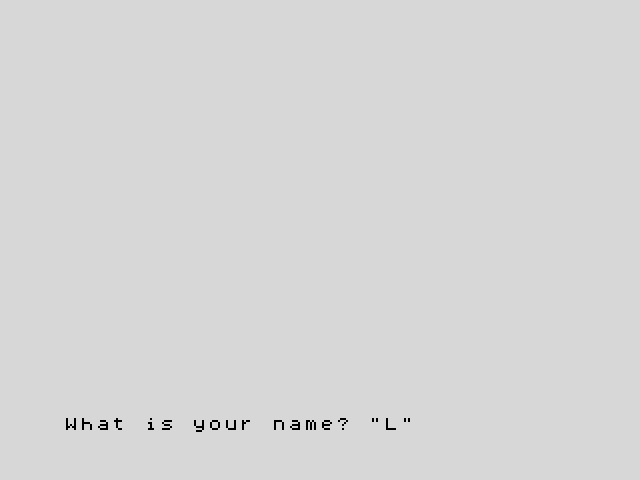

3. Text and input
In this chapter you will learn to keep text in string variables, to
join and cut text, and to ask the person at the keyboard with INPUT.
Strings
A piece of text is called a string. You already used strings: everything
between double quotes, like "Hello". Strings can be kept in variables too.
Their names are a single letter followed by $ (say "a-string"): a$,
n$, t$.
10 LET a$="ZX"
20 LET b$="Spectrum"
30 LET c$=a$+" "+b$
40 PRINT c$
50 PRINT LEN c$
60 PRINT c$(1 TO 2)
70 PRINT c$(4 TO )
80 PRINT c$(4)
This prints:
ZX Spectrum
11
ZX
Spectrum
S
+joins strings: line 30 builds"ZX Spectrum".LENgives the length, the number of characters (spaces count).c$(1 TO 2)takes a slice: from character 1 to character 2.c$(4 TO )goes from 4 to the end, andc$(4)is just character 4.
There are only 26 string variables, one per letter, so choose letters that
remind you of what they hold: n$ for a name, w$ for a word.
Numbers and text
A number and a string are different things: "42" is two characters, 42
is a number. These functions turn one into the other:
| Function | What it does | Example | Result |
|---|---|---|---|
STR$ |
number to string | STR$ 42 |
"42" |
VAL |
string to number | VAL "2*3+1" |
7 |
CODE |
the code of the first character | CODE "A" |
65 |
CHR$ |
the character with that code | CHR$ 66 |
"B" |
10 LET n=42
20 LET t$=STR$ n
30 PRINT "The number has ";LEN t$;" digits"
40 PRINT VAL "2*3+1"
50 PRINT CODE "A",CHR$ 66
Every character has a code: A is 65, B is 66, and so on. You will use
CODE again when you read the keyboard in chapter 11.
Asking questions: INPUT
INPUT stops the program and waits for the person to type something and
press Enter. Whatever they type goes into a variable:
10 INPUT "What is your name? ";n$
20 INPUT "How old are you? ";age
30 PRINT "Hello, ";n$
40 PRINT "In ten years you will be ";age+10
The question appears at the bottom of the screen, followed by a flashing cursor:

If the variable is a string (n$), the cursor appears between quotes, to
remind you that the answer is text: type it without the quotes, they are
already there. Any text is fine. If it is a number
(age), type a number: the machine works out what you type as if it were a
sum, so 30+6 also gives 36. Words are a problem there: typing ten, for
example, stops the program with 2 Variable not found, because the machine
thinks ten is the name of a variable.
Try it
- Ask for a first name and a surname, and print the initials: with "Grace"
and "Hopper" the program prints
Your initials: GH. - Ask for a word and print how many letters it has.
Hint
Character 1 of f$ is f$(1). For the second exercise, LEN does the
counting.
A solution for the first one
10 INPUT "First name? ";f$
20 INPUT "Surname? ";s$
30 PRINT "Your initials: ";f$(1);s$(1)
Reference: Strings,
LEN, STR$, VAL,
CHR$, CODE,
INPUT.
Next: 4. Decisions · Previous: 2. Variables and maths